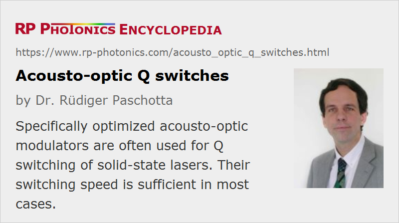

Acousto-optic Q Switches
Definition: acousto-optic modulators used for Q switching of lasers
More general term: Q-switches
German: akusto-optische Güteschalter
How to cite the article; suggest additional literature
Author: Dr. Rüdiger Paschotta
Acousto-optic modulators (AOMs) can be optimized for the particular application of Q switching lasers. Such an acousto-optic Q switch is placed inside a laser resonator. While the laser is pumped, the RF input of the AOM is switched on, on that the diffraction losses of light circulating in the resonator are high (because the diffracted beams leave the resonator), and lasing is suppressed. When the RF input is suddenly switched off, an intense laser pulse is generated.
Most Q-switched solid-state lasers contain an acousto-optic Q switch; only few lasers are built with an electro-optic Q switch, where highest switching speeds and/or very high loss modulations are required.
Requirements on Acousto-optic Q switches
General requirements on AOMs are discussed in the article on acousto-optic modulators. Specifically for Q switching of lasers, the following aspects are relevant for proper performance:
- The insertion loss for the zero-order (non-diffracted) beam should be very low in order to avoid power losses and thermal effects. Therefore, a loss-absorption acousto-optic medium should be used (frequently fused silica) and prepared with high surface quality. To suppress reflections from the optical surfaces, anti-reflection coatings are frequently used. There are also Q switches where the active element is operated at Brewster's angle; that enforces linear polarization of the laser beam. In some cases (e.g. for lasers where strong depolarization loss would occur), the Q switch should be polarization-independent.
- The input and output polarization should usually be identical. (Q switches are normally based on isotropic diffraction, even when non-isotropic acousto-optic media are used.)
- The damage threshold of the modulator must be high enough to withstand the intense laser pulses.
- The diffraction losses in the “on” state must be high enough to safely suppress lasing. The required losses depend on the gain of the laser gain medium.
- The switching speed must be high enough to obtain a clean pulse build-up. That requirement essentially depends on the round-trip time of the laser resonator (thus on its length) and on the laser gain. The achievable switching speed is essentially limited by the acoustic velocity and the beam radius in the Q switch. For usual solid-state lasers, the required switching speed is easily obtained, but for particularly compact short-pulse lasers, this may be challenging. In some cases, an electro-optic modulator is required due to the speed limitations of AOMs.
- The device should be suitable for a high duty cycle, as is typical for such laser applications.
There are various kinds of trade-offs. For example, tellurium dioxide (TeO2) with its high elasto-optic coefficients requires small acoustic powers, but has a moderate damage threshold. Higher optical intensities can be tolerated by crystalline quartz or fused silica, but at the cost of higher acoustic powers (and thus also RF powers). The acoustic power required also depends on the optical aperture of the device: large aperture devices, as required for high-power lasers, require higher acoustic powers. The heat generation in the Q switch can then be so strong that water cooling is necessary. At lower power levels, conductive cooling is sufficient.
For high-gain lasers (for example, fiber lasers), one may use the first-order diffracted beam under lasing conditions, so that very high resonator losses result when the AOM is turned off. However, the losses in the lasing state are then also fairly high, and a frequency shift occurs during pulse generation. Therefore, that configuration is not often used.
RF Drivers for Acousto-optic Q switches
The used electronic driver is usually a device operating with a fixed modulation frequency and a digital input for rapid on/off switching of the RF output.
The required RF drive power is normally substantial (sometimes even well above 10 W) for several reasons:
- The laser gain is often (but not always) quite high, so that substantial loss modulation is necessary for Q switching.
- The acousto-optic medium must be optimized for low losses, tentatively leading to a lower acousto-optic figure of merit.
- If polarization-independent operation is required, one must use shear waves, leading to a still lower figure of merit.
- Particularly for high-power lasers, a large aperture and correspondingly large acoustic beam diameter is required.
As the RF power is finally converted to heat, water cooling of AOMs is often necessary.
Suppliers
The RP Photonics Buyer's Guide contains 11 suppliers for acousto-optic Q switches. Among them:
Questions and Comments from Users
Here you can submit questions and comments. As far as they get accepted by the author, they will appear above this paragraph together with the author’s answer. The author will decide on acceptance based on certain criteria. Essentially, the issue must be of sufficiently broad interest.
Please do not enter personal data here; we would otherwise delete it soon. (See also our privacy declaration.) If you wish to receive personal feedback or consultancy from the author, please contact him e.g. via e-mail.
By submitting the information, you give your consent to the potential publication of your inputs on our website according to our rules. (If you later retract your consent, we will delete those inputs.) As your inputs are first reviewed by the author, they may be published with some delay.
See also: Q switches, Q switching, acousto-optic modulators
and other articles in the category photonic devices
|  |
If you like this page, please share the link with your friends and colleagues, e.g. via social media: 


These sharing buttons are implemented in a privacy-friendly way! |
2020-04-30
How does the choice of carrier frequency affect the AOQS performance? Usually, 40 and 80 MHz are offered, but no explanation is given which is better suited to laser Q switching.
Answer from the author:
There is no fundamental difference. However, there are lasers where a higher modulation frequency is needed in order to get a sufficiently large spatial deflection. For example, low-power lasers often operate with tightly fosused beams, having a large beam divergence, and require correspondingly larger diffraction angles for effectively suppressing lasing.